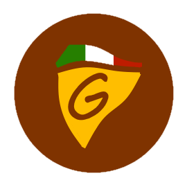

Le premier Giovanni's Pizza ouvre ses portes en Octobre 2023 à Milan, la marque fait vite de l'effet dans la capitale de la pizza et se développe dans toute l'italie. Leurs pizza sont les meilleurs du pays selon le créateur.
La marque Giaovanni's Pizza se développe dans le reste de l'Europe et écrase la concurence.
Le Pape décide de bénir Giovanni's Pizza, les pizza de Giovanni deviennent sacré et divisi l'Italie en deux camp. Le premier Giovanni's Pizza deviens un lieux de combat fréquent.
| Pays | Nombre de pizzeria | Nombre de pizzas originales |
|---|---|---|
| Italie | 105 | 345 |
| France | 34 | 12 |
| Suisse | 2 | 0 |
| Espagne | 24 | 3 |
| Portugal | 16 | 2 | Belgique | 18 | 6 |
"Mangia, non Parlare" ( Traduction : Mange, Parle pas )
-
Giovanni Tibiano
